Украина - Украинская гривна
1 гривна
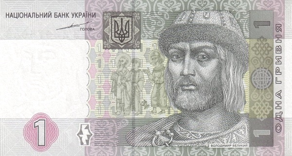 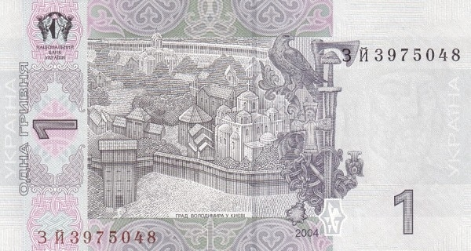Лицевая сторона - Владимир Великий
Обратная сторона - Город Владимира в Киеве
2 гривны
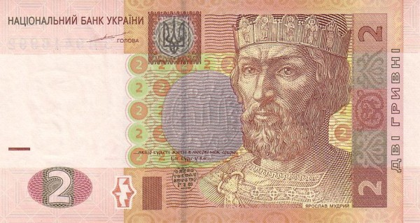 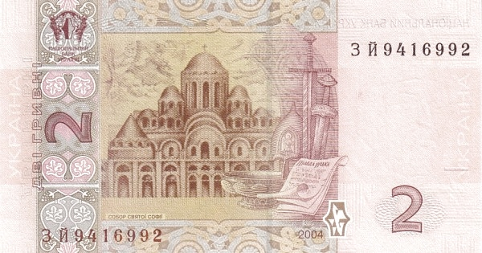Лицевая сторона - Ярослав Мудрый
Обратная сторона - Собор Святой Софии в Киеве
5 гривен
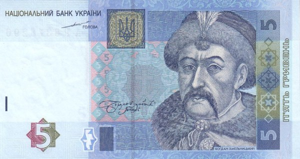 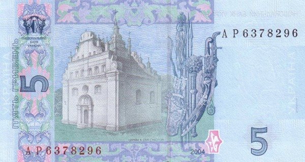Лицевая сторона - Богдан Хмельницкий
Обратная сторона - Ильинская церковь в Суботове
10 гривен
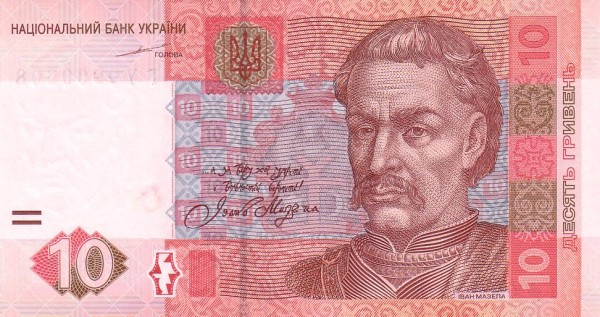 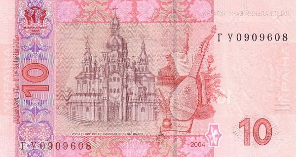Лицевая сторона - Иван Мазепа
Обратная сторона - панорама Киево-Печерской лавры
20 гривен
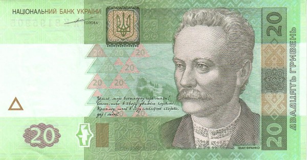 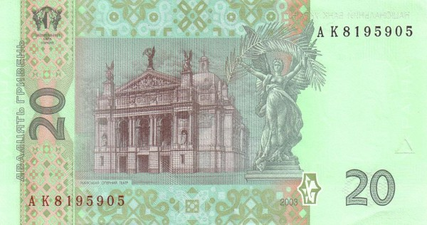Лицевая сторона - Иван Франко
Обратная сторона - Львовский оперный театр
50 гривен
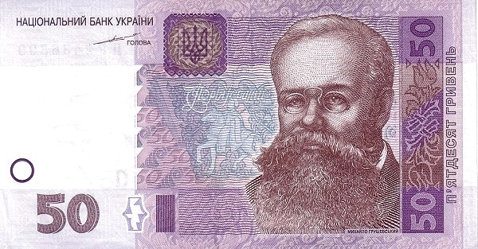 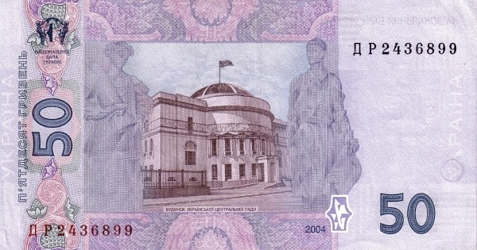Лицевая сторона - Михаил Грушевский
Обратная сторона - здание Центральной Рады УНР
100 гривен
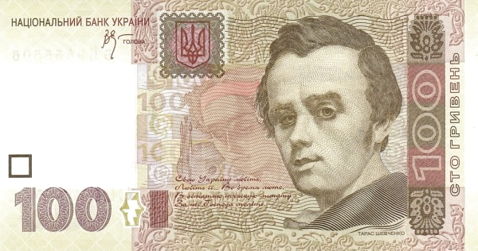 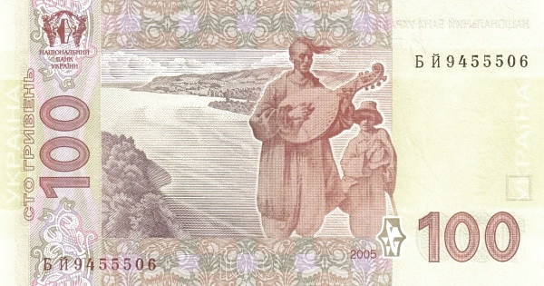Лицевая сторона - Тарас Шевченко
Обратная сторона - Днепр и слепой бандурист с мальчиком-поводырём
200 гривен
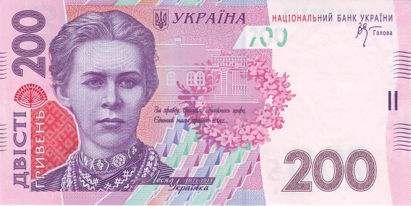 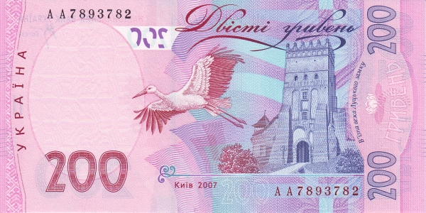Лицевая сторона - Леся Украинка
Обратная сторона - башня Луцкого замка
500 гривен
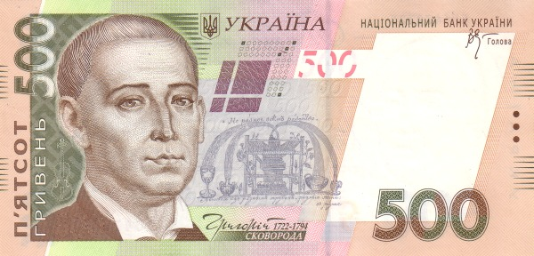 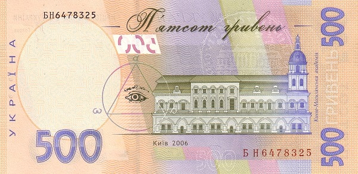Лицевая сторона - Григорий Сковорода
Обратная сторона - Киево-Могилянская академия